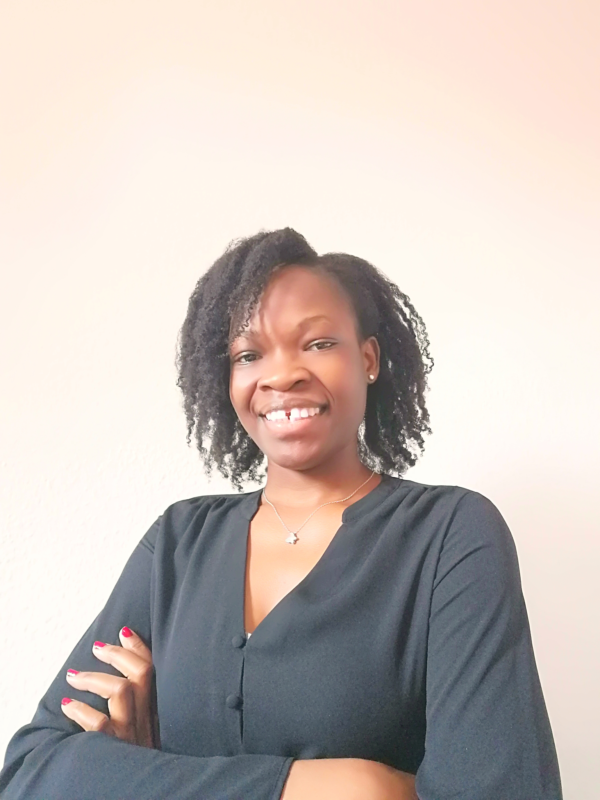

De chercheur scientifique (phyisicienne, climatologue, hydrologue-modelisateur des eaux de surface) au crochet, ce fut un long parcours. Rien ne me prédestinait apparement à faire du crochet. Et... pendant que j'y pense j'ai du mal à situer dans le temps quand exactement est-ce que mon amour du crochet a débuté. Je cherchais à réaliser des choses uniques, j'avais besoin de ce sentiment de satisfaction et de bonheur que cela procure de se sentir utile et surtout de voir que je suis capable de réaliser ce que j'imaginais. J'ai donc décidé d'explorer mon pouvoir imaginatif et créateur.
Inutile de vous dire que j'ai galéré. Je n'avais aucune expérience, alors vraiment aucune. Du haut de mes 26 ans je n'avais jamais vu ni tenue de crochet de toute ma vie. J'ai acheté un kit de réalisation de jouet lapin pour enfant. Ce fut un désastre :). A force d'essayer, de réessayer, de rereessayer, de rerere... j'ai fini le fil dans le kit sans réaliser l'ouvrage. Ce fil m'a plutôt servi à apprendre quelques notions de base: comment faire un noeud en début de chainette, maille serrée, bride... Tous ces termes étaient comme du chinois, donc pour faire simple et pour ne pas devenir folle, je me contentais de regarder très minutieusement des tutos d'ouvrage en me concentrant sur le mouvement de mains et de doigts de la personne qui réalisait l'ouvrage. Donc tout ouvrage combinant plusieurs type de point était une vrai galère pour moi. Pour mes débuts je faisais donc attention à ne sélectionner que des tutos très simples, soit uniquement en mail serrées ou uniquement en bride. Je me suis traduite les termes en langage facile; par exemple, une bride c'est lorsqu'on fait un jeté sur le crochet puis on sort le fil à travers deux boucles, ensuite à travers deux boucles. Ainsi, mon premier ouvrage fut une couverture, toute en bride; et tenez-vous bien, j'ai mis plus de deux mois à la réaliser. Ensuite j'ai fait un bonnet, puis un sac, puis une jupette, puis... puis... puis plein d'autres choses. Le crochet était presque une addiction, en fait cela me procurait une paix sans pareil. Aujourd'hui encore je ressens cette tranquilité et ce bonheur lorsque je fais du crochet.
Je me suis bien améliorée au fil des mois et des années. Je me suis formée et je prends du plaisir à exprimer ma créativité à travers mes ouvrages. J'ai créé cette page pour partager et transmettre mon amour du crochet, mais également pour apprendre de vous à travers vos commentaires. Aujourd'hui, Rholy crochet vous propose divers services pour réaliser des merveilles au crochet. Nous mettons à votre disposition du matériel de qualité pour réaliser vos ouvrages: laines, coton, trapihlo, crochet, aiguille, rembourrage, et divers accessoires. Nous vous proposons également de jolies ouvrages réaliser avec les produits de notre boutique: sacs à mais, bikini, robes, couvertures, bonnets, châle, boîte à bijoux, chaussons pour enfants, et pleins d'autres articles. Tout ce que vous imaginez, nous le réalisons.
Want to go back to top? Back to top